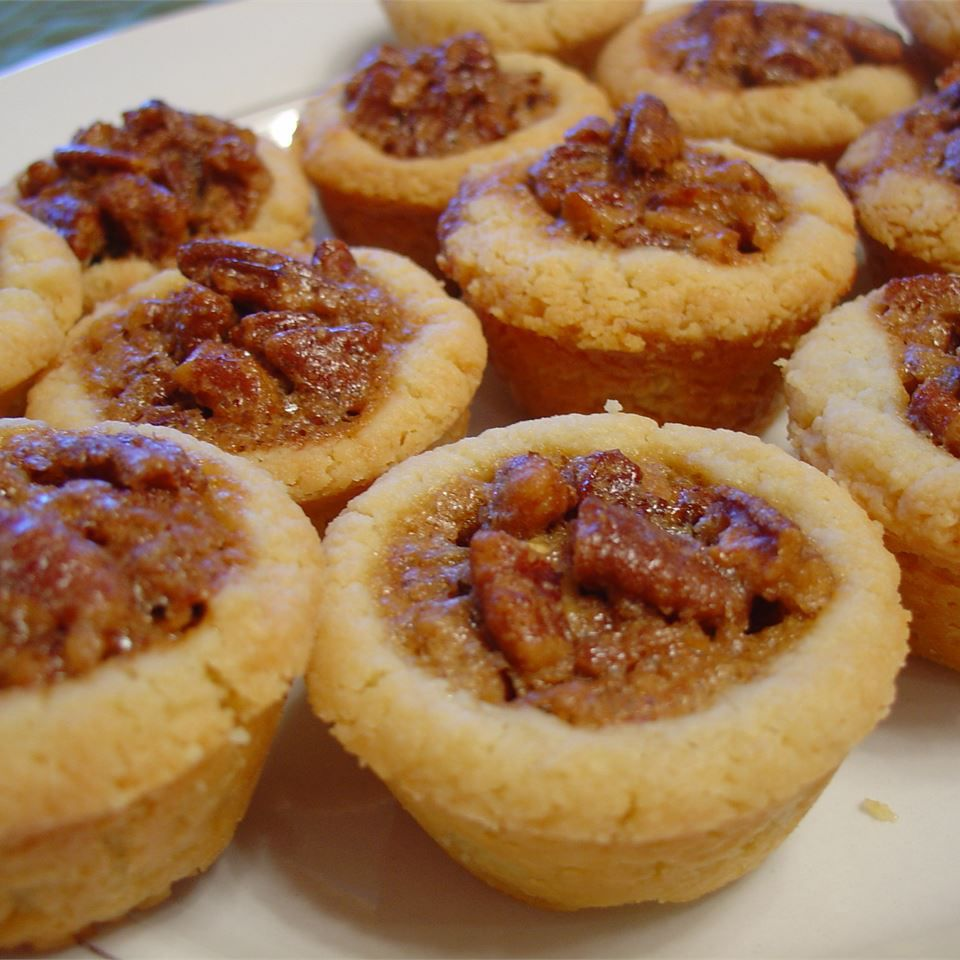

Tarts

Tiny Pecan Tarts Recipe
These little pecan tarts are so easy to make and delicious. They melt in your mouth! My brother requests these
every year for the holidays.
Ingredients:
-
4 large eggs
-
3 cups packed brown sugar
-
1 cup chopped pecans
Steps:
- Preheat the oven to 350 degrees F (175 degrees C). Lightly grease two mini tart pans.
-
Make the pastry: Combine butter and cream cheese in a large bowl; beat with an electric mixer until smooth
and
creamy. Add flour and mix to form a smooth dough.
-
Divide dough into 48 balls; place one ball in each greased cup of tart pans. Use your fingers or a tart
tamper
to press out into a tart shell.